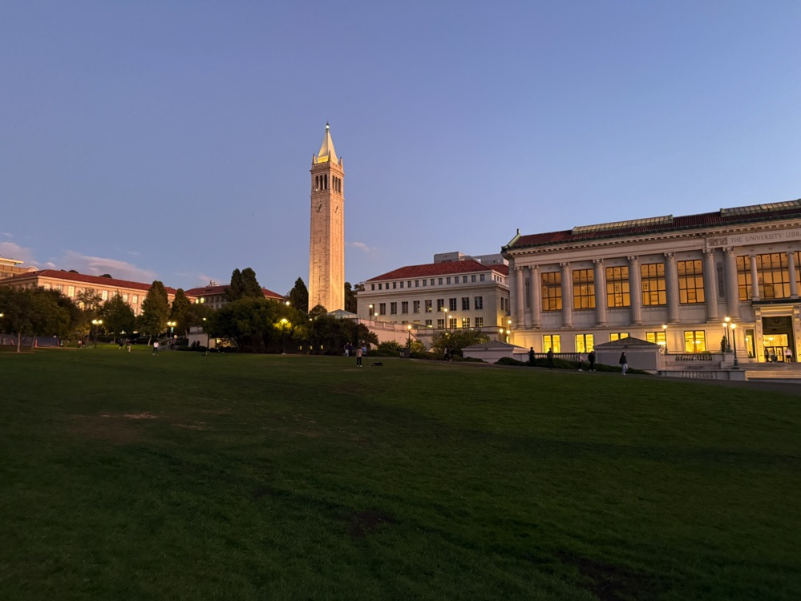
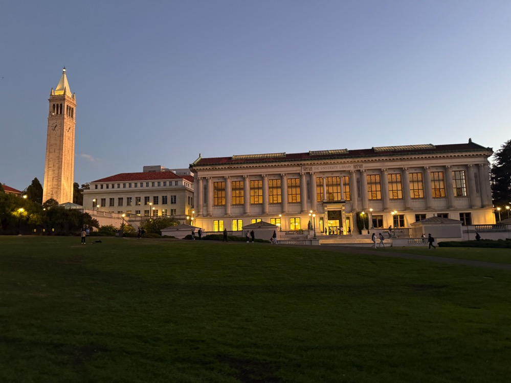
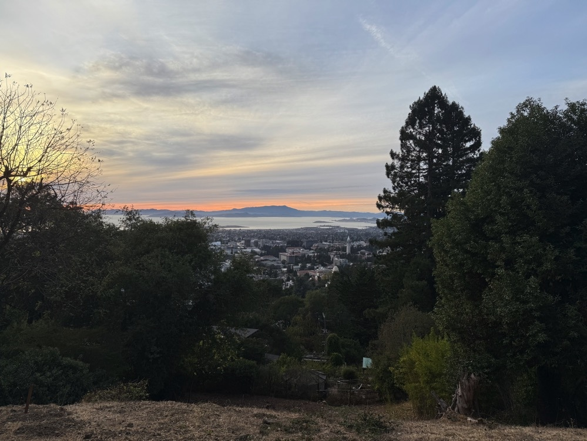
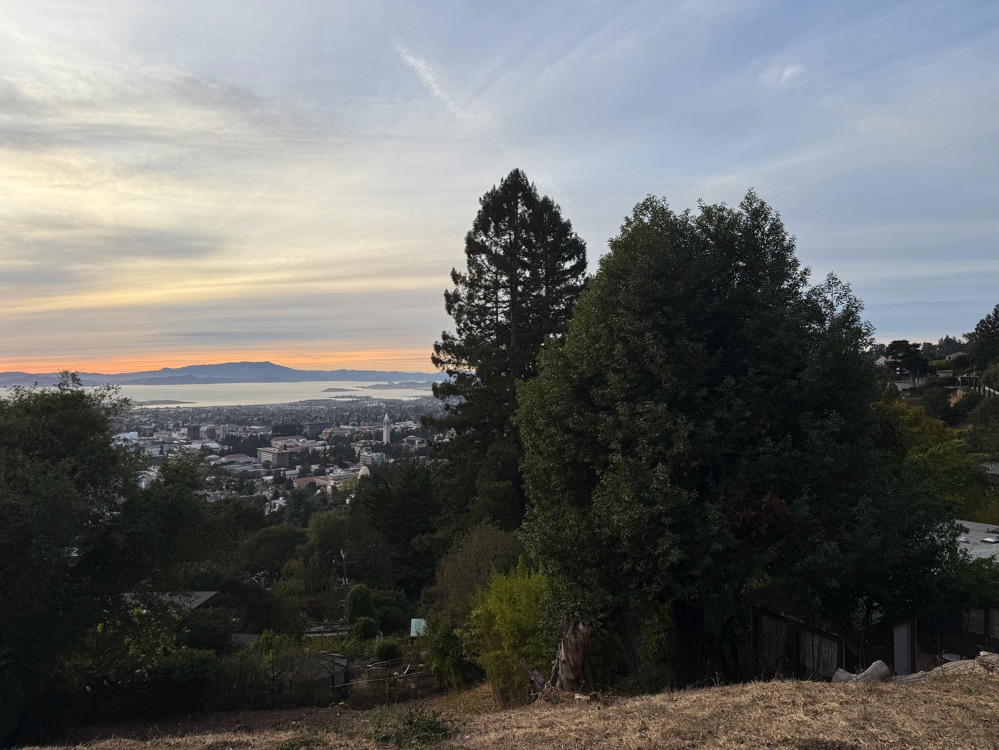
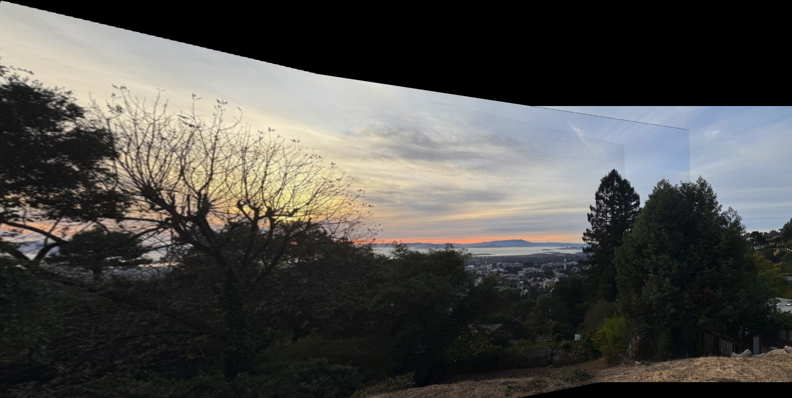
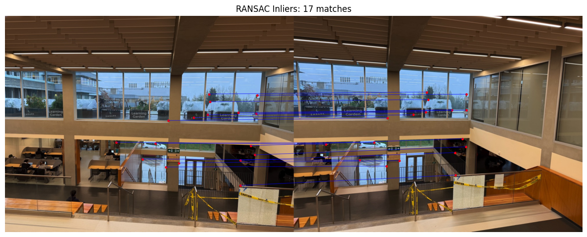
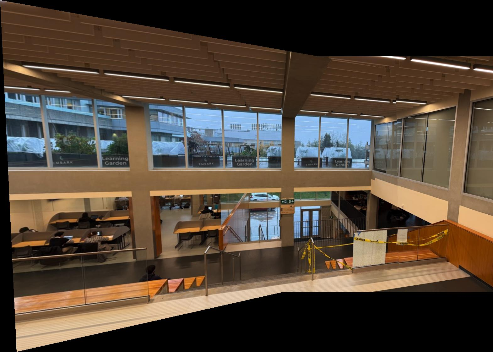
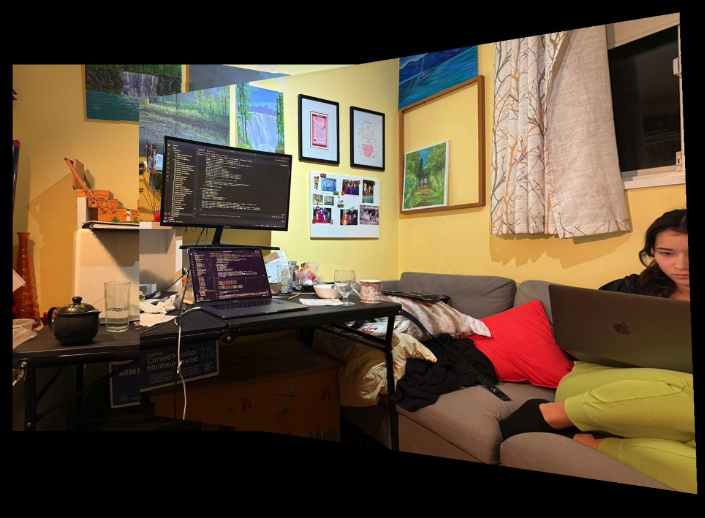
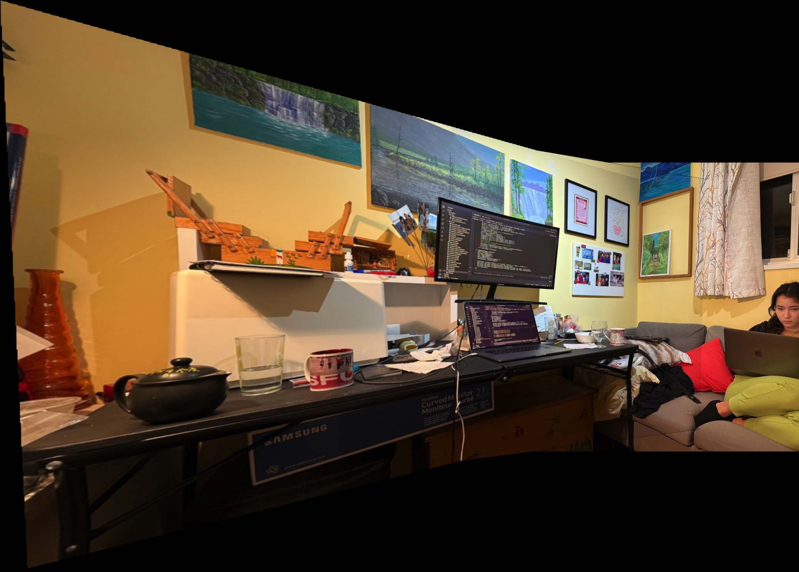

In this project, I developed a system for automatically stitching images into a mosaic by implementing feature detection, description, matching, and homography estimation techniques. A key aspect of this project was to read and implement concepts from the research paper “Multi-Image Matching using Multi-Scale Oriented Patches” by Brown et al., with several simplifications.
One of the coolest things I learned from this project was how much I started to pay attention to my surroundings and consider photographic opportunities. I noticed a change in the way I think and contemplate scenes, as I began to pay attention to where I go and to take pictures that could be stitched together. Another interesting observation was the impact of moving objects on automatic feature matching. For instance, when I took pictures of the Berkeley Doe Library with people walking by, it was challenging to get the stitch working correctly due to the moving subjects.
Example Results
Berkeley Doe Library
Figure 1: Berkeley Doe Library Image 0.

Figure 2: Berkeley Doe Library Image 1.

Figure 3: Berkeley Doe Library Image 2.
Figure 4: Berkeley Doe Library Image 3.
Figure 5: Automatic Stitching Result of Berkeley Doe Library.
Berkeley Hills on My Classical Sunset Run
Figure 6: Berkeley Hills Image 1.

Figure 7: Berkeley Hills Image 2.

Figure 8: Berkeley Hills Image 3.

Figure 9: Automatic Stitching Result of Berkeley Hills Sunset.
Due to the presence of moving people in some images, stitching all of them was challenging. Therefore, I focused on stitching the images without significant movement to achieve better results.
Step 1: Harris Interest Point Detector
The first step was to detect corner features in the images using the Harris Interest Point Detector. Harris corners are points in an image where the surrounding pixels have significant changes in intensity in all directions, making them suitable for tracking and matching.
The Harris corner detector computes the gradient of the image and analyzes the eigenvalues of the second-moment matrix to find regions with significant variations. These points are overlaid on the image as shown below.
Step 1.2: Adaptive Non-Maximal Suppression (ANMS)
After detecting corners, I implemented Adaptive Non-Maximal Suppression (ANMS) to select a subset of keypoints that are both strong and well-distributed across the image. This process helps in reducing the computational load and improving the matching performance.
The ANMS algorithm works by computing a suppression radius \( r_i \) for each corner point, defined as the minimum distance to a stronger corner, scaled by a robustness constant \( c_{\text{robust}} \). The suppression radius is calculated as:
Here, \( f_i \) is the corner strength at point \( i \), and \( x_i \) is the coordinate of point \( i \). The robustness constant \( c_{\text{robust}} \) controls the suppression level. I used \( c_{\text{robust}} = 0.9 \) and selected the top 500 points with the largest suppression radii.
The resulting keypoints after applying ANMS are shown below.
Figure 10: Detected Harris Corners on SFU Image.
Figure 11: ANMS Filtered Corners on SFU Image.
Step 2: Feature Descriptor Extraction
For each keypoint, I extracted a feature descriptor to characterize the local image region. I sampled a 40x40 pixel window around each keypoint and downsampled it to an 8x8 patch by taking a step size of 5 pixels. This process captures the essential structure while reducing the dimensionality.
The descriptors were bias and gain normalized to account for lighting variations. I ignored rotation invariance for simplicity. An example of a feature descriptor is shown below.
Figure 12: Feature Descriptor for Keypoint 15 on SFU Image.
Step 3: Feature Matching
With the feature descriptors extracted, I proceeded to match them between pairs of images. I used the approach described by Lowe, where matches are determined based on the ratio of the distances to the first and second nearest neighbors.
Specifically, for each descriptor in the first image, I found its two nearest neighbors in the second image. If the ratio of the distances \( \frac{d_1}{d_2} \) was below a threshold (I used 0.8), the match was considered reliable. This helps in filtering out ambiguous matches.
The matched features before and after applying the threshold are visualized below.
Figure 13: Feature Matches Before Thresholding.
Figure 14: Feature Matches After Applying Threshold (Pre-RANSAC).
Step 4: RANSAC for Homography Estimation
To robustly estimate the homography between the images, I used the RANSAC (Random Sample Consensus) algorithm. RANSAC iteratively selects random subsets of matches to compute candidate homographies and then evaluates them based on the number of inliers—matches that fit the model within a certain error threshold.
The algorithm proceeds as follows:
Select 4 random point correspondences.
Compute the homography \( H \) using these points.
Apply \( H \) to all matched points and compute the reprojection error.
Count the number of inliers where the error is below a threshold.
Repeat the process for a set number of iterations or until a satisfactory model is found.
The final homography is computed using all inliers from the best model. This process helps to eliminate outliers and results in a more accurate alignment.
The matches after applying RANSAC are shown below.

Figure 15: Feature Matches After RANSAC.
Final Results: Manual vs. Automatic Stitching
After computing the homographies automatically, I proceeded to stitch the images into panoramas. Below are comparisons between manual stitching (from Project 4A) and automatic stitching for each of the mosaics.
it is also important to mentioned that I did some modification in my blending process for part 4B
Comparison 1: SFU University General Room
Figure 16: Manual Stitching of SFU Images.

Figure 17: Automatic Stitching of SFU Images.
Comparison 2: Night Pictures in Burnaby, BC
Figure 18: Manual Stitching of Night Images.
Figure 19: Automatic Stitching of Night Images.
Comparison 3: Doing Work in a Room

Figure 20: Manual Stitching of Room Images.

Figure 21: Automatic Stitching of Room Images.
Additional Results
Here are my favorite final results from the Berkeley Doe Library and the Berkeley Hills.
Figure 22: Automatic Stitching of Berkeley Doe Library.
Figure 23: Automatic Stitching of Berkeley Hills Sunset.
Conclusion
Through this project, I gained a deeper understanding of feature detection, description, and matching techniques, as well as robust homography estimation using RANSAC. Implementing these algorithms allowed me to automate the image stitching process and appreciate the challenges involved, such as dealing with moving objects and varying lighting conditions.
The coolest thing I learned was how the combination of computer vision techniques can produce impressive results, enabling us to create panoramas automatically. Additionally, this project made me more observant of my surroundings, considering how scenes could be captured and stitched together.